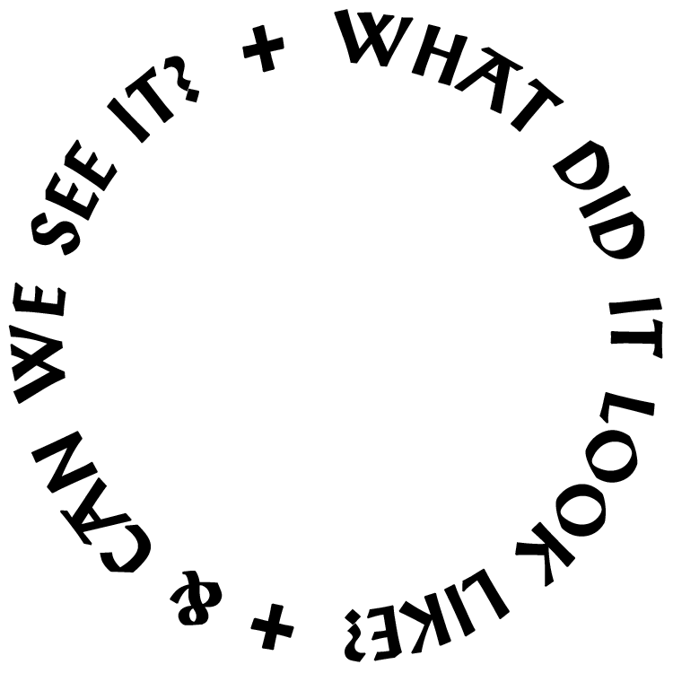
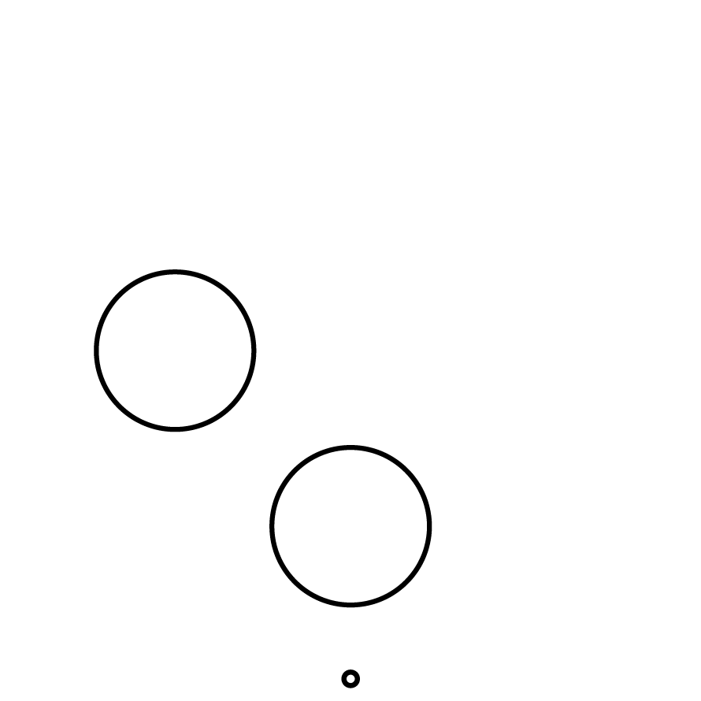
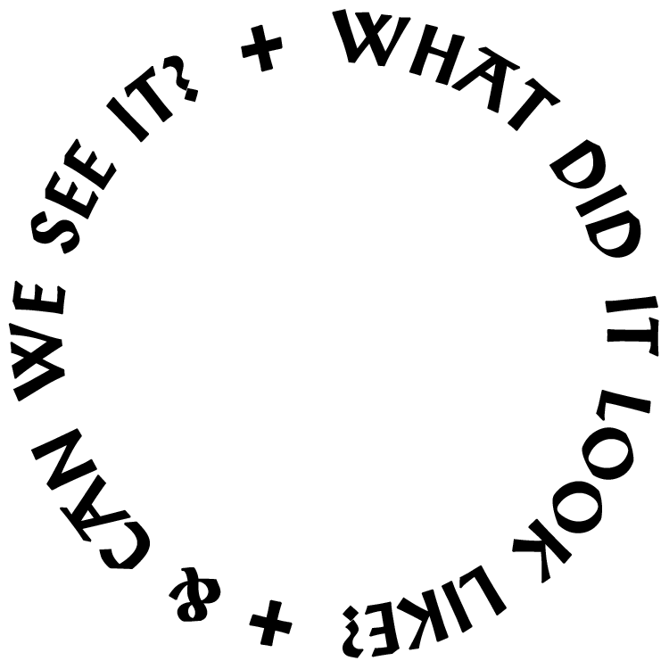
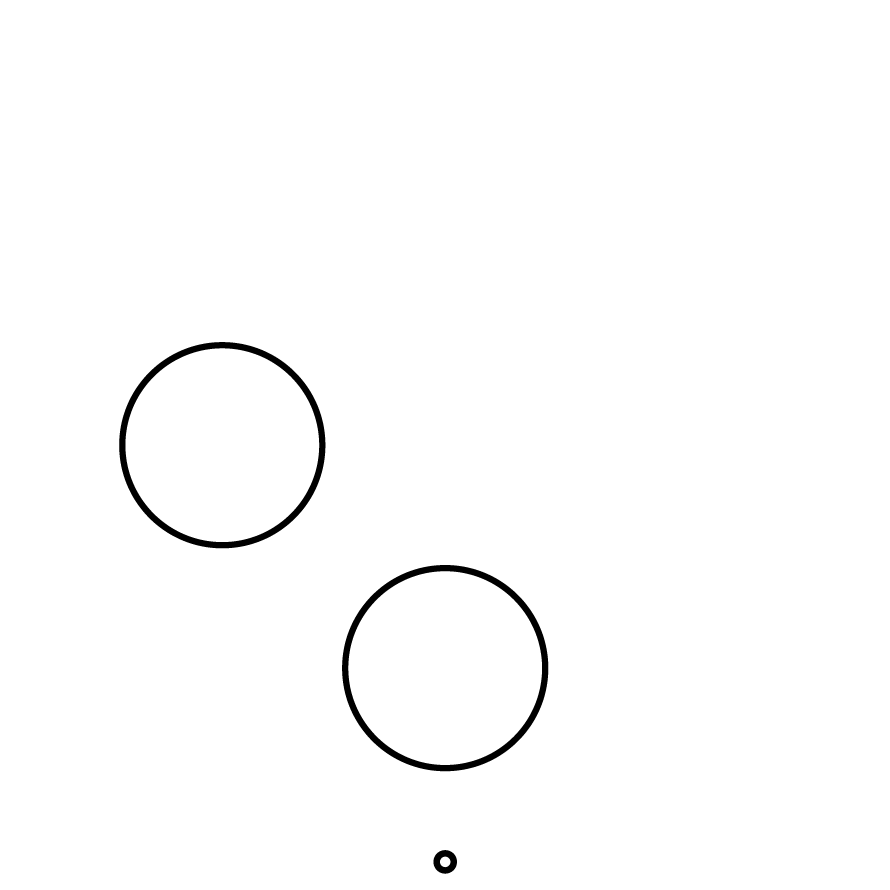

In April, 2015, I set up an infinitely-looping GIF of myself in meditation, facing a plain, somewhat dingy wall. This GIF was set to loop for forty-nine days (the length of time the Buddha sat beneath the Bodhi Tree), at which point it would achieve non-attachment on my behalf. The GIF would then be destroyed.
With the file deleted, the GIF's false, fleeting existence ended; the storage space it occupied returned to being pure potential.
Unfortunately, the intended effect of my own enlightenment, achieved via the surrogate that sat in my place, did not take place. The promise of the digital project, wherein automated stand-ins can achieve our goals for us, has shown its limits.
This series of pages will remain up as a record of the failed attempt. A copy of the GIF (not the "original") is included. As an extension of the original project, it will meditate indefinitely. Perhaps it will achieve a fuller, truer enlightenment which I can take part in.

 


